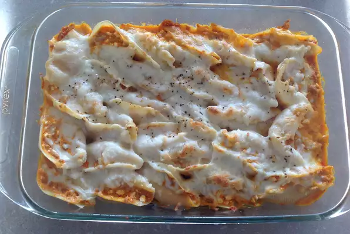

Buffalo Chicken Stuffed Shells

Description
This is a hit for football Sundays. For a thicker stuffing, drain ricotta overnight. Serve with ranch and blue cheese dressing for dipping.
Ingredients
- 1 lb ground chicken
- 1/4 cup butter
- 1 cup Frank's RedHot
- 1 (16 oz) container whipped ricotta cheese
- cooking spray
- 1 (16 oz) package jumbo pasta shells
- 1 (8 oz) package shredded Cheddar-Monterey Jack cheese blend
- 4 skinless, boneless chicken breasts, cut into 1-inch pieces
- salt and freshly ground black pepper to taste
Steps
- Heat a large skillet over medium-high heat. Cook and stir ground chicken in the hot skillet until browned and crumbly, 5 to 7 minutes; drain and discard grease.
- Melt butter in the skillet with the cooked chicken. Stir cayenne pepper sauce into the chicken mixture and remove from heat.
- Squeeze as much moisture from the ricotta cheese using a cheese cloth or paper towels; put drained cheese in a large bowl. Add chicken mixture to the cheese and stir. Refrigerate until completely chilled, 3 to 4 hours.
- Preheat oven to 375 degrees F (190 degrees C). Prepare a 13x9-inch baking dish with cooking spray.
- Bring a large pot of lightly salted water to a boil. Cook pasta shells in the boiling water until cooked through but firm to the bite, about 10 minutes; drain. Rinse with cold water until no longer hot; drain.
- Spoon chicken mixture into cooked pasta shells and arrange into the prepared baking dish. Sprinkle Cheddar-Monterey Jack cheese blend over the stuffed shells; season with salt and pepper.
- Bake in preheated oven until the cheese is slightly melted and the stuffing is hot in the middle, 15 to 20 minutes.